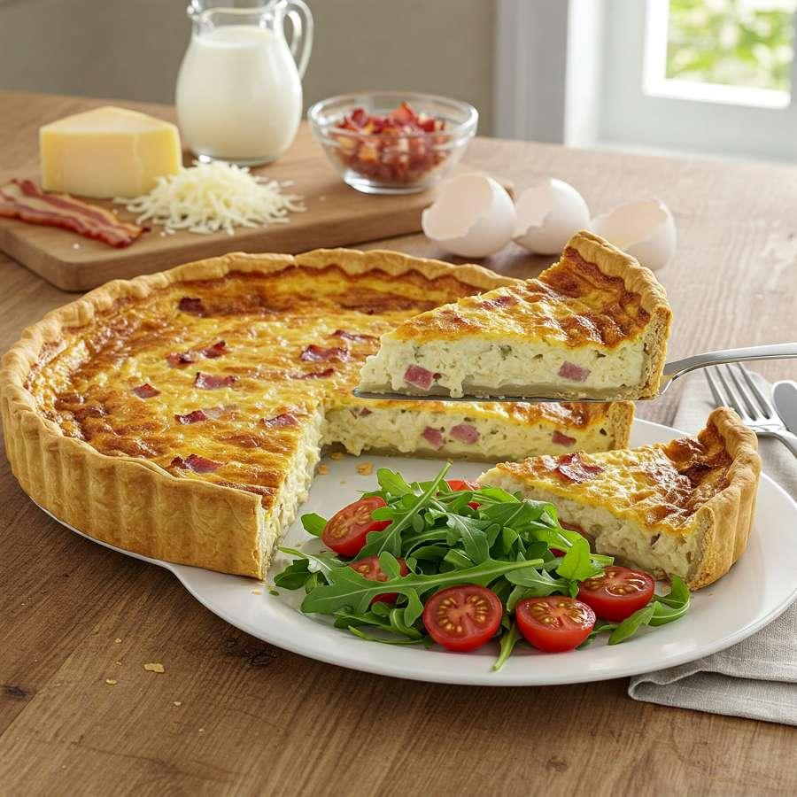

Quiche Lorraine
La vraie quiche Lorraine bien dorée, un classique toujours au top.
Ingrédients :
- 1 pâte brisée
- 200g de lardons
- 3 œufs
- 20cl de crème fraîche
- 20cl de lait
- Sel, poivre, muscade
- Un peu de gruyère râpé (optionnel)
Préparation :
- Préchauffe le four à 180°C.
- Étale la pâte dans un moule et pique-la avec une fourchette.
- Fais revenir les lardons à la poêle (sans matière grasse).
- Dans un bol, bats les œufs avec la crème, le lait, sel, poivre, muscade.
- Ajoute les lardons sur la pâte, verse l’appareil par-dessus, ajoute un peu de gruyère si tu veux.
- Enfourne 40 min jusqu’à ce que ce soit bien doré.
← Retour à l'accueil